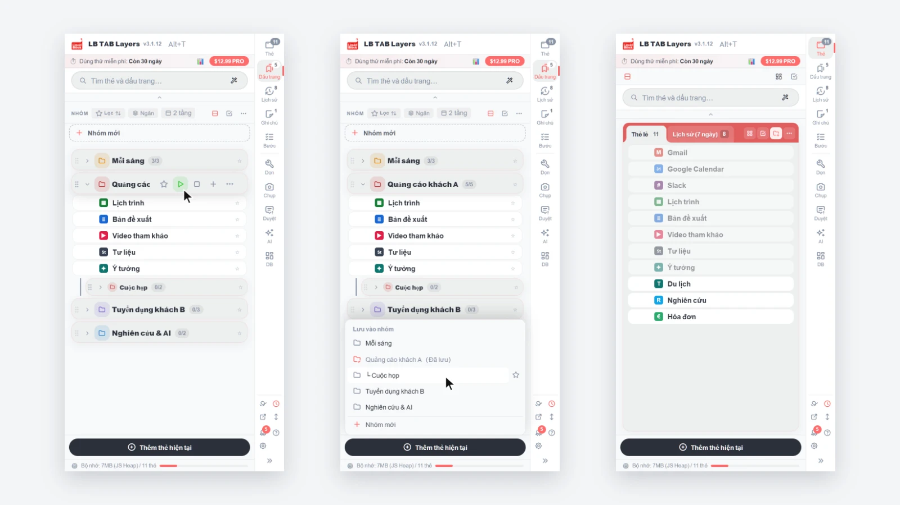
Nhấn Alt+T (Option+T trên Mac) để mở LB TAB Layers. Lúc đầu bạn chỉ cần nhớ ba việc: lưu thẻ đang xem bằng Thêm thẻ hiện tại, mở cả nhóm bằng ▶ và đóng lại bằng ■. Mọi thứ bạn lưu đều nằm trong dấu trang của Chrome, nên vẫn còn nguyên dù bạn đóng thẻ hay khởi động lại Chrome.
Cảm ơn bạn đã cài LB TAB Layers. Trang này chỉ nói về những gì bạn cần trong năm phút đầu tiên.
Ý tưởng rất đơn giản. Thẻ là “bây giờ”: việc bạn đang làm. Dấu trang là “để sau”: thứ bạn sẽ quay lại. Lịch sử hôm nay là “nhật ký” những gì bạn đã xem. Với LB TAB Layers, bạn chuyển qua lại giữa cả ba ngay trong một bảng điều khiển bên.
💡 Nhấn Alt+T (Option+T trên Mac) để mở bất cứ lúc nào. Bạn cũng có thể nhấp vào biểu tượng LB TAB Layers trên thanh công cụ. Nếu không thấy biểu tượng, hãy nhấp vào biểu tượng mảnh ghép rồi ghim LB TAB Layers.
Trước tiên: bắt đầu bằng cách sao chép dấu trang hiện có (khuyên dùng)
Nếu bạn đã có dấu trang trong Chrome, sao chép chúng vào TAB Layers trước là cách bắt đầu nhanh nhất. Dấu trang gốc không bị di chuyển, nên không có gì bị mất.
Nhấp vào “Bắt đầu từ dấu trang của bạn (khuyên dùng)”
Mục này nằm trên cùng của màn hình chào mừng hiện ra ngay sau khi cài đặt.
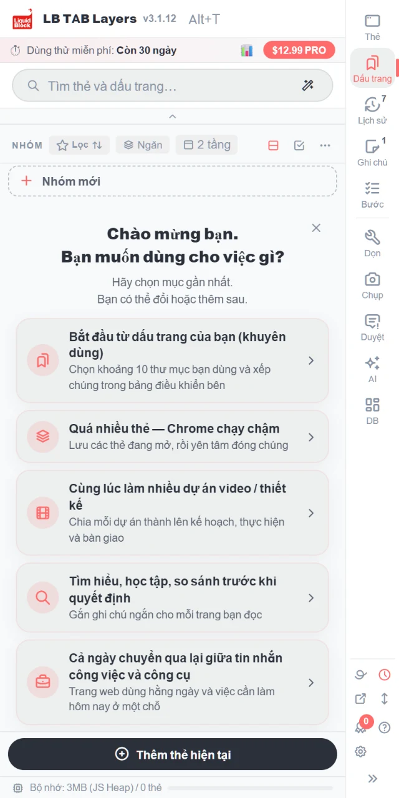
Nhấp “OK” để sao chép
Bạn sẽ thấy số dấu trang sẽ được sao chép. Dấu trang gốc vẫn được giữ nguyên ở chỗ cũ. Dù có nhiều dấu trang, việc này cũng chỉ mất vài giây.
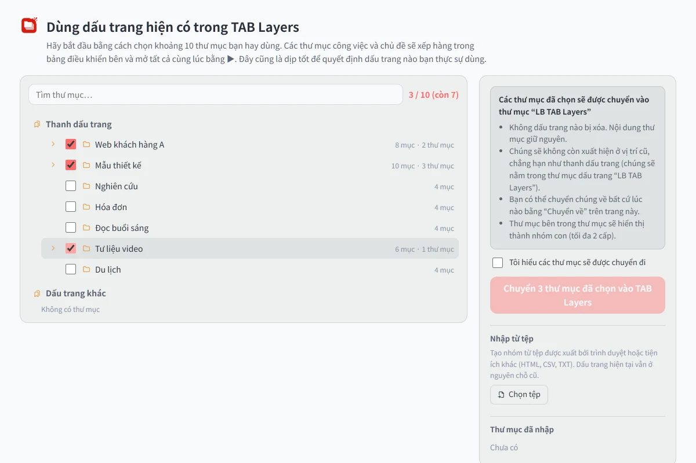
Chuyển một trang bạn hay dùng vào “Dự án đầu tiên”
Các bản sao được gom vào một khu tạm có tên “Dấu trang hiện có (sao chép ngày)”, và mỗi thư mục trở thành một nhóm con. Nhấp “→ Dự án đầu tiên” ở đầu bên phải hàng của một trang bạn hay dùng, trang đó sẽ được chuyển sang. Khu tạm này không tính vào giới hạn 5 nhóm của bản miễn phí.
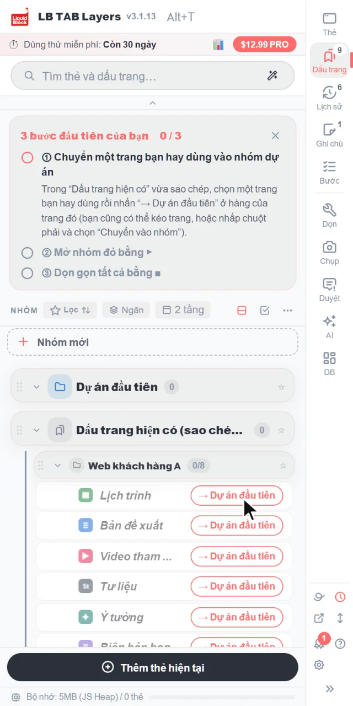
Sau đó mở bằng ▶ và đóng bằng ■
Thẻ “3 bước đầu tiên của bạn” ở phía trên sẽ hướng dẫn từng bước tiếp theo. Nếu bạn có từ 200 dấu trang trở lên, thẻ cũng gợi ý sắp xếp chúng trên màn hình lớn (bảng tổng quan).
💡 Bạn cũng có thể chọn thư mục và chuyển nguyên chúng thành nhóm. Mở từ Cài đặt → Dữ liệu → Dấu trang, hoặc bằng nút “Nhập dấu trang” ở phía trên bảng tổng quan toàn màn hình. Các tệp xuất từ trình duyệt hoặc tiện ích khác (HTML, CSV, TXT) cũng có thể đưa vào từ đó. Khi bạn đã quen với TAB Layers, tiện ích cũng sẽ đề nghị gom gọn dấu trang gốc vào một thư mục (không xóa gì cả và bạn có thể hoàn tác bất cứ lúc nào).
Khi bảng điều khiển bên vướng víu: “Phủ lên” trên trang
Bảng điều khiển bên nằm cạnh trang, nên trên màn hình nhỏ, trang sẽ bị hẹp lại. Khi đó, hãy chuyển sang chế độ “Phủ lên” để hiện bảng ngay trên trang. Thường ngày, ở mép trang chỉ có một dấu “+” nhỏ, và bảng chỉ mở ra khi bạn cần.
Chọn “Phủ lên” trong “Cài đặt” › “Hoạt động” › “Chế độ hiển thị”
Mở Cài đặt bằng biểu tượng bánh răng ở dưới cùng của cột bên phải. Tại đây bạn cũng có thể chọn “Vị trí lớp phủ” (trái hoặc phải), “Chiều rộng lớp phủ”, “Vị trí nút” và “Hiển thị khi khởi động” (ví dụ “Hé mở”).
Đóng bảng điều khiển bên
Nhấn Alt+T hoặc nhấp × ở góc trên bên phải của bảng. Nếu dấu “+” không xuất hiện trên trang đã mở từ trước, hãy tải lại trang.
Di chuột lên dấu “+” ở mép trang
Bảng sẽ trượt ra phủ lên trang. Đưa chuột trở lại trang thì bảng sẽ đóng.
Chế độ “Phủ lên” có các tính năng cơ bản. Bạn có thể quản lý thẻ và dấu trang (lưu, mở bằng ▶, đóng bằng ■, tìm kiếm), cũng như dùng “Ghi chú” và “Bước”. Ghi chú duyệt cho video và trang (“Duyệt”) được dùng trong bảng điều khiển bên — khi cần, hãy nhấn Alt+T để mở bảng điều khiển bên. Chế độ “Phủ lên” là tính năng PRO (dùng được trong 30 ngày dùng thử miễn phí).
💡 Bảng cũng có thể mở bên ngoài bảng điều khiển bên. Từ “Cách hiển thị” ở dưới cột bên phải, bạn có thể mở bảng trong thẻ mới hoặc trong cửa sổ riêng. Trên máy tính xách tay, một thẻ cho bạn nhiều không gian; nếu có hai màn hình, bạn có thể đặt cửa sổ riêng ở màn hình còn lại.
1. Làm quen với màn hình
Dọc theo mép bảng có một cột nút: Thẻ, Dấu trang, Lịch sử, Ghi chú và Bước. Nhấp vào một nút để chuyển sang màn hình đó. Các con số nhỏ cho biết, chẳng hạn, bạn đang mở bao nhiêu thẻ hoặc có bao nhiêu nhóm.
- Thẻ — các thẻ đang mở mà bạn chưa lưu vào đâu
- Dấu trang — các thẻ bạn đã lưu, gom thành nhóm, mỗi dự án một nhóm
- Lịch sử — các trang bạn đã xem hôm nay, kể cả những trang chưa lưu
- Ghi chú và Bước — ghi chú cho công việc và danh sách việc cần làm theo từng bước
Bên dưới đường kẻ ngăn là các công cụ. Ngày đầu tiên bạn chưa cần đến chúng.
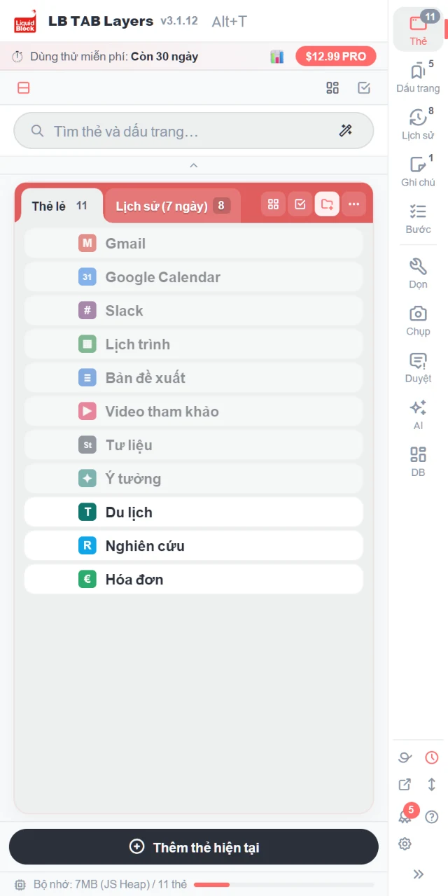
2. Các thao tác cơ bản
Tạo một nhóm
Ở màn hình Dấu trang, nhấp + Nhóm mới ở đầu danh sách. Đặt tên theo một công việc, ví dụ “Web khách hàng C” hoặc “Mỗi sáng”. Hiệu quả nhất là mỗi dự án một nhóm.
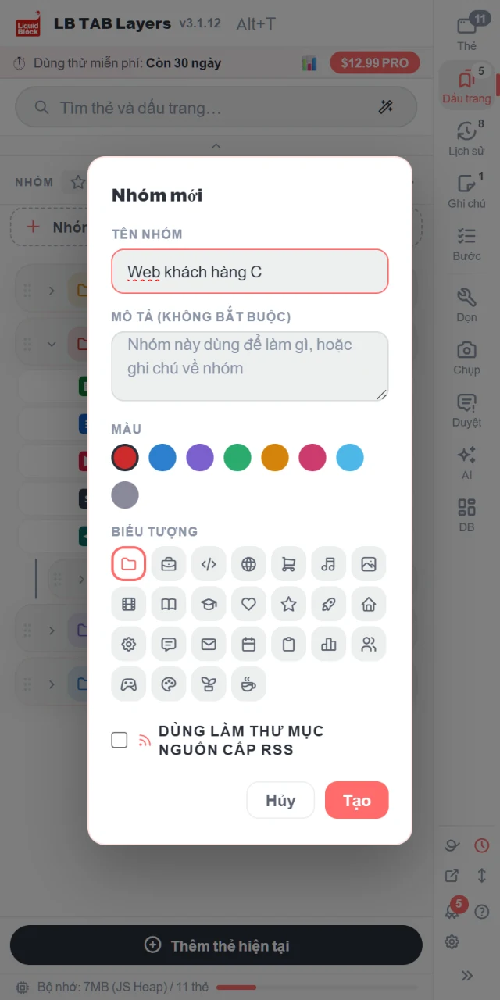
Lưu thẻ đang xem
Nhấp Thêm thẻ hiện tại ở cuối bảng rồi chọn một nhóm. Những nhóm đã có trang này được đánh dấu Đã lưu.
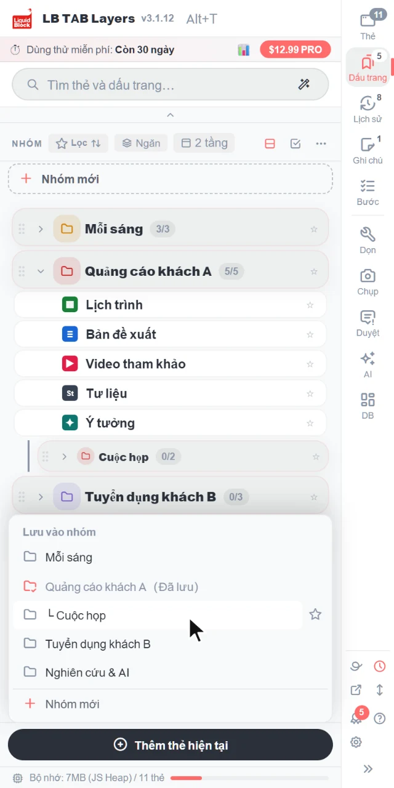
Lưu nhiều thẻ đang mở cùng lúc
Ở màn hình Thẻ, nhấp vào vòng tròn bên trái một thẻ để bắt đầu chọn. Nhấp tiếp vào vòng tròn của những thẻ khác bạn muốn lưu, sau đó nhấp Vào nhóm ở phía dưới và chọn một nhóm. Bạn cũng có thể kéo từng thẻ rồi thả vào một nhóm.
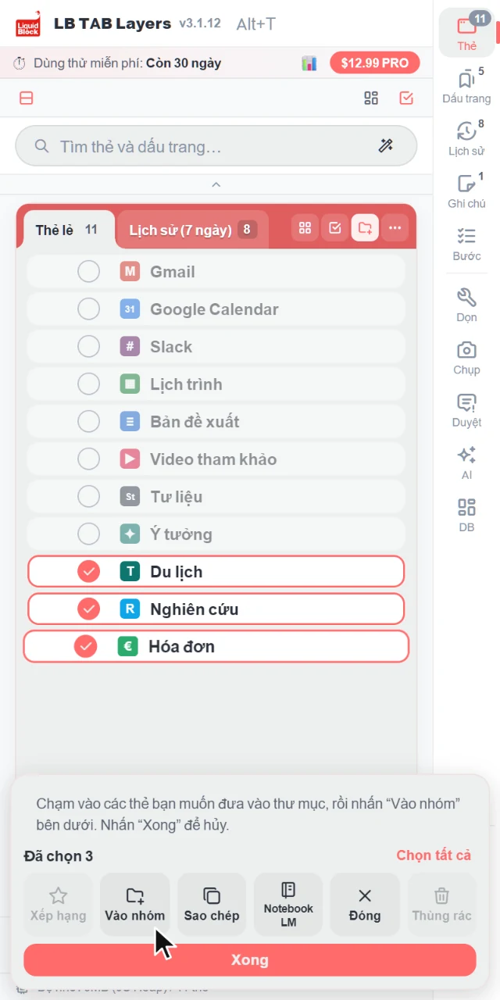
Mở tất cả bằng ▶, đóng tất cả bằng ■
Di chuột lên một nhóm rồi nhấp ▶ để mở tất cả thẻ của nhóm. Các thẻ mở ra cùng nhau thành một nhóm thẻ của Chrome, cùng tên và cùng màu với nhóm của bạn. Khi xong việc, nhấp ■ để đóng cả nhóm thẻ đó trong một lần. Các thẻ đã lưu vẫn được giữ nguyên.
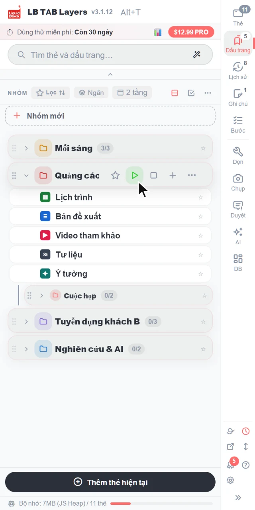
Tìm kiếm
Gõ vào ô tìm kiếm ở trên cùng để tìm cùng lúc trong các thẻ đang mở, các thẻ đã lưu và lịch sử hôm nay. Gõ sai một vài chữ cũng không sao.
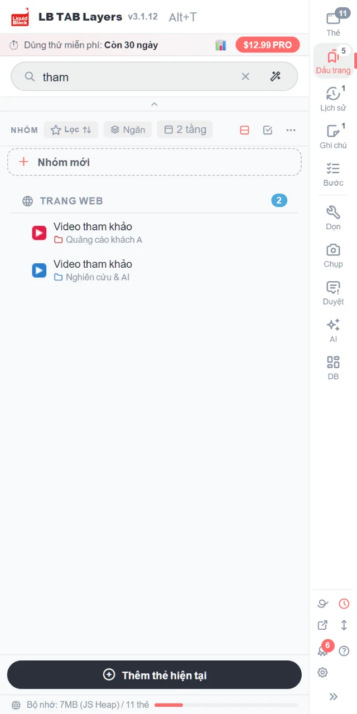
3. Một cách đơn giản để sắp xếp công việc
Mỗi dự án một nhóm
Hãy coi mỗi nhóm như một chiếc bàn làm việc dành riêng cho một việc. Cả ngày của bạn có thể xoay quanh cách này:
- Buổi sáng — nhấp ▶ ở dự án hôm nay và làm tiếp từ chỗ đang dở
- Khi đổi việc — đóng dự án đang làm bằng ■ rồi mở dự án tiếp theo bằng ▶
- Cuối ngày — chỉ cần nhấp ■. Ngày mai, ▶ sẽ mở lại tất cả
Đưa các trang dùng hằng ngày lên thanh ghim
Với những trang bạn mở mỗi ngày, như email hay lịch, hãy nhấp chuột phải vào một thẻ hoặc dấu trang rồi chọn Thêm vào thanh ghim. Chúng nằm thành các biểu tượng nhỏ ở đầu bảng và mở ra chỉ bằng một cú nhấp (tối đa 12 trang). Bạn cũng có thể kéo rồi thả vào đó.
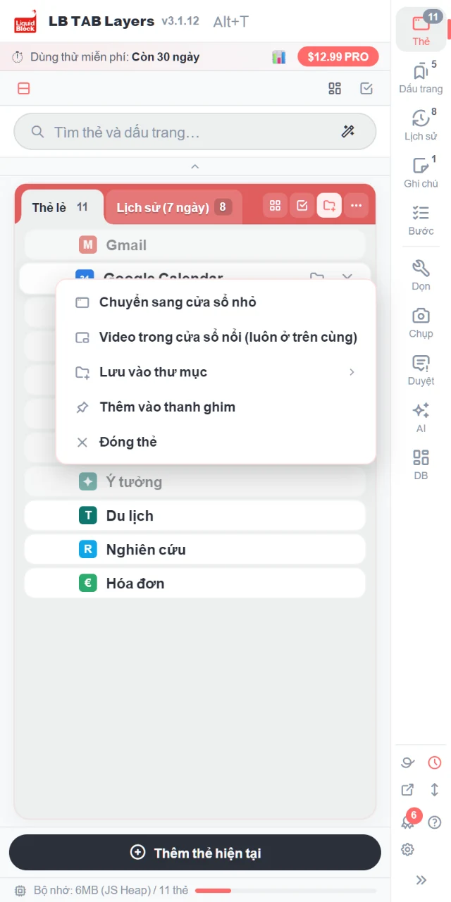
Mỗi dự án một cửa sổ riêng
Nhấp chuột phải vào một nhóm rồi chọn Mở trong cửa sổ mới để mở nhóm đó thành nhóm thẻ trong một cửa sổ khác. Cách này tiện khi bạn làm hai việc song song hoặc dùng màn hình thứ hai.
Quên lưu thứ gì đó? Lịch sử hôm nay vẫn còn giữ
Bạn không cần lưu mọi thứ. Những trang chưa lưu vẫn nằm trong Lịch sử, theo thứ tự bạn đã xem hôm nay. Lưu thứ quan trọng vào một nhóm rồi đóng phần còn lại; thường như vậy là đủ.
🔒 Mọi thứ bạn lưu đều nằm trong dấu trang của Chrome. Các thẻ đã lưu vẫn còn đó dù bạn đóng thẻ hay khởi động lại Chrome, và LB TAB Layers không gửi dấu trang của bạn đi đâu cả. Dữ liệu nằm trong tiện ích, chẳng hạn ghi chú, có thể xuất ra từ Cài đặt.
Xem thêm mười thao tác khác trong bài hướng dẫn (bằng tiếng Anh).
Câu hỏi thường gặp
Q. Làm thế nào để mở LB TAB Layers?
Nhấn Alt+T trên bàn phím (Option+T trên Mac). Bạn cũng có thể nhấp vào biểu tượng LB TAB Layers trên thanh công cụ.
Q. Nếu gỡ tiện ích, các thẻ đã lưu có mất không?
Không. Các thẻ đã lưu vẫn nằm trong dấu trang Chrome, trong những thư mục cùng tên với các nhóm của bạn. Dữ liệu nằm trong tiện ích, chẳng hạn ghi chú, sẽ bị xóa, nên hãy xuất ra từ Cài đặt trước khi gỡ.
Q. Ô tìm kiếm tìm ở những đâu?
Trong các thẻ đang mở, các thẻ đã lưu trong nhóm và lịch sử hôm nay, tất cả cùng lúc.
Q. Có miễn phí không?
Có. Bản miễn phí cho phép tạo tối đa 5 nhóm. Lịch sử hôm nay, Bước, bảng tổng quan và tìm kiếm bằng AI là các tính năng PRO, và mọi tính năng đều dùng được trong 30 ngày sau khi cài đặt.
Hãy bắt đầu với một dự án.
Mở bằng Alt+T, lưu thẻ đang xem, mở bằng ▶ và đóng bằng ■. Không cần tài khoản · Lưu thành dấu trang Chrome · Miễn phí mọi tính năng trong 30 ngày
Thêm vào Chrome miễn phí →